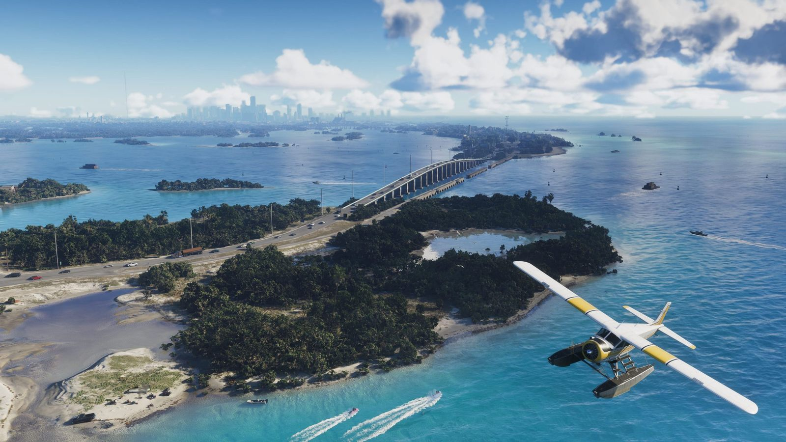

The GTA 6 map: Leonida
GTA 6 is set in the state of Leonida — a modern-day return to Vice City and the countryside, islands and wetlands around it. Confirmed

Confirmed locations
Vice City
The neon heart of Leonida — beaches, nightlife and the city's criminal underworld, far bigger than the 2002 original.
The Leonida Keys
The island chain Jason works around — causeways, marinas and smuggling country.
The Grassrivers
Leonida's wetlands: swamps, airboats and gator country beyond the city lights.
More locations are added as Rockstar confirms them and as they are verified in the released game. An interactive map grows from launch week, marked only with locations we can stand behind — fan guesses are labelled as guesses or left out.
Sources: Rockstar Games official GTA VI page and trailers (Leonida, Vice City, Keys, Grassrivers). Checked 18 November 2026.